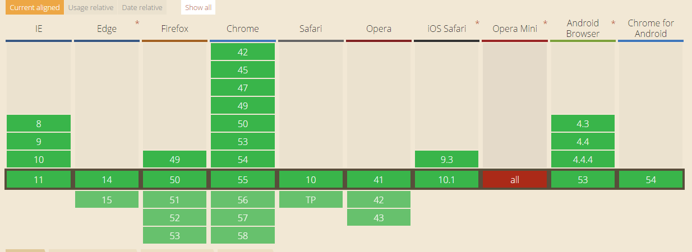

By kin
2016.12.20

Method of storing data locally like cookies, but for larger amounts of data (sessionStorage and localStorage, used to fall under HTML5).
一种保存数据在本地的方法像cookies一样，但用于存储大量的数据（HTML5标准下的sessionStorage 和 localStorage）
webStorage提供了localStorage 和 sessionStorage 两个api。
localStorage
本地存储，除非被显示的删除，否则一直存在。数据大小为5MB。
sessionStorage
只在当前会话下存在，关闭浏览器或页面后被清除。数据大小为5MB。使用方法与localStorage。
setItem(key,value)
getItem(key)
removeItem(key)
clear()
length
key(n) 返回第n个key的名称
var ls=window.localStorage;
// 保存数据
// 数据以string类型的保存在本地
ls.setItem('one',1);
// 取出数据
ls.getItem('one');//1
// 删除某个键值对
ls.removeItem('one');
// 删除全部
ls.clear();
// 返回本地存储的个数
ls.length;
api和使用方法与localStorage相同
cookie是网站为了标示用户身份而储存在用户本地终端（Client Side）上的数据（通常经过加密）。
cookie数据始终在同源的http请求中携带（即使不需要），记会在浏览器和服务器间来回传递。
sessionStorage和localStorage不会自动把数据发给服务器，仅在本地保存。
存储大小：
cookie数据大小不能超过4k。
sessionStorage和localStorage 虽然也有存储大小的限制，但比cookie大得多，可以达到5M或更大。
有期时间：
localStorage 存储持久数据，浏览器关闭后数据不丢失除非主动删除数据；
sessionStorage 数据在当前浏览器窗口关闭后自动删除。
cookie 设置的cookie过期时间之前一直有效，即使窗口或浏览器关闭